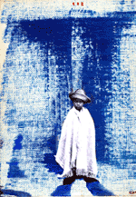

 |
|
Servidor
ha sido desde niño kilienista. Padre ya me mandaba de chico a los
bares para que le sellara los boletos y pronto aprendí yo mismo
a hacer mis propias combinaciones y muy pronto supe también que
los boletos además de rellenarse se gastaban. Me hice aficionado
y luego, un enfermo: llegaba a apostar grandes cantidades de dinero y
tan sólo con doce años llegué a malgastar todos los
ahorros de padre. Al ir creciendo me hice más vicioso y probétodo
tipo de azares, escatimando fortunas y vendiendo mi cuerpo a viejas damas
de la jet. Un
día bebiendo mis últimas pesetas en una negra tasca de Granada
un señor se me acercó y me dijo si quería compartir
unas apuestas.Yo le dije que de qué se trataba, desconfiándo
un poco de la cara de espabilado del tipo. He tratado con la gente más
desgraciada y se distinguir a unpringao cuando le veo; el tío me
dijo que si apostábamos algo a que se largaba del lugar sin pagar
y yo con él, o me forraba a ostias; yo le dije que vale, que aceptaba
la apuesta. Ni que decir tiene que perdí, porque nada más
salir del lugar me quitó la ropa y el dinero, me dió una
somanta y se largó silbando. Pero me hizo ver como eI azar es caprichoso
y a la vez justo y esa misma semana el boleto que siempre sellaba en la
taberna fue el premiado y entónces se acabaron mis desgracias.
Sigo siendo el Kilienista, ahora informatizado y formando peñas
y puedo decir que el azar y la suerte es lo más bonito del mundo.
No sabemos que nos espera al doblar la esquina y podemos apostar siempre
por lo mejor. |